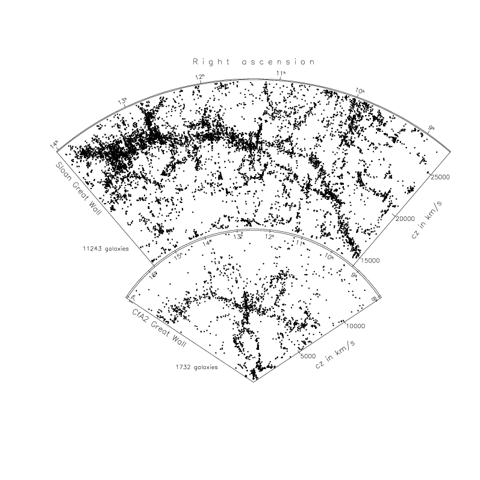
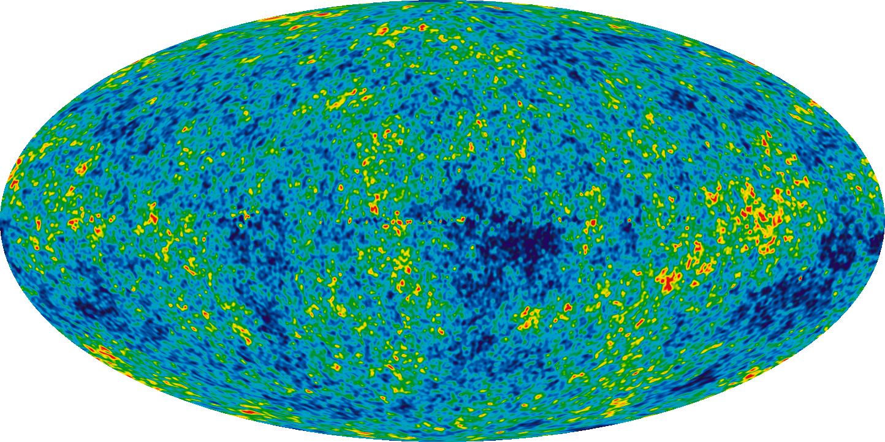
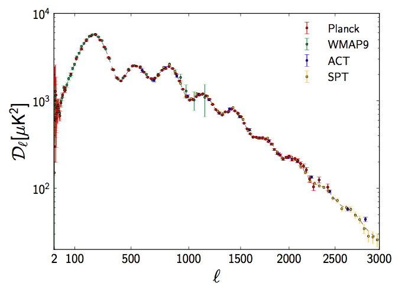
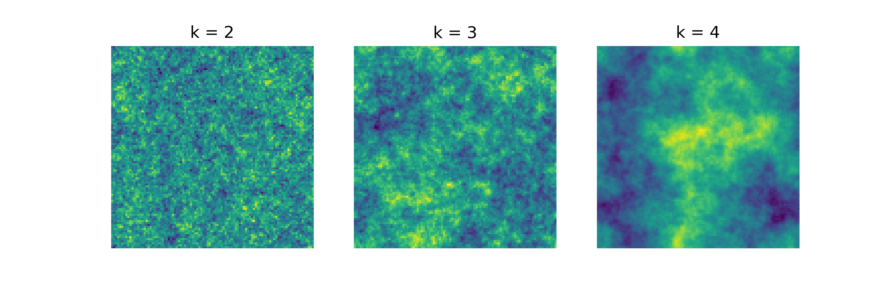

Cartography of galaxies revealed that there is a large scale structure in the universe. The cause for these structures are already engraved in the very first light of the universe, the cosmic microwaver backround radiation (CMB). In this project, I used the statistical features of the CMB to recreate an simulation that exhibits the same structure as our universe.
Cosmology
Numeric N-Body Simulations
Python
Sometimes one can not see the forest for the trees. Similarly, the universe seems to be a huge, endless and chaotic space with randomly distributed galaxies in all directions. But behind all that mess is actually a pattern, that we still did not completely understand.
The image below is a map of the matter distribution of our universe. Each single pixel contains thousands of galixies, clustered together due to gravity. If we combine them, we can see a web like formation that spans for millions of light years across.
Naturally we want to what is causing these structures. A strategy to answer this question is to simulate an early universe and let it envolve, until it looks like the picture above. As a starting point, we need to use the very first light that was ever created, the Cosmic Microwave Backround Radiation (CMB).
In the image above, the CMB is shown. Each color represents an assosiated wavelength that we can translate into a temperature. The differences in the Image are of the order of 0.000001°C, meaning that the image is acutally extremely homogeneous. However, we can analyze the small deviations and calculate their correlation with other deviations. With this way, we can see a pattern inside the CMB
As a first step in simulating the universe, we have to create a artifical CMB that has the same statistics as the real one. Its temperature deviations must be distributed Gaussian and have to follow a similar correlation pattern. Below, we see the result of three different realisations of the same correlation pattern, the only difference being the distance of the correlations. With a high value for k, correlations become long ranged, meaning we have a more ordered image.
We now assume that the CMB was the foundation for our universes matter distribution, meaning that areas with higher temperatures had a higher concentration of matter. Therefore, we can use the generated CMB as a gravitational field that attracts particles. By Implementing the resulting forces, a once uniform matter distribution becomes more and more structured like the spatial correlations we find in the CMB. We have created a first oder approximation for the universe!
By tracking each particle, we can identify chaotic areas, get a feeling for transition times (so called shell crossing) and impress our friends. A summary of how to track particles and generate animated images can be found here.